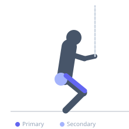
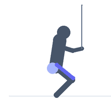

Exercise guide / Spanish Squat
Spanish Squat
The Spanish squat uses a resistance band looped around a fixed post at knee height, which the lifter presses the shins against during the squat. This creates a vertical shin angle by preventing the knees from traveling forward, shifting nearly all load to the quadriceps while decompressing the patellar tendon. It is widely used in rehabilitation settings for patellar tendinopathy and knee pain.
Primary muscles
rectus femoris
vastus lateralis
vastus medialis
vastus intermedius
Secondary muscles
gluteus maximus
Stabilizers
erector spinae
Equipment
Resistance Band (Loop / Mini Band)


Starting position
- Loop a heavy resistance band around a fixed post at approximately knee height. Step into the band with both shins pressing against it. Stand with feet hip-width apart, shins vertical against the band.
Setup
- Secure a resistance band to a stable vertical post. The band should contact the front of the shins at mid-shin level when you are in your squat position.
Steps
- Step 1: Press the shins into the band and brace your core.
- Step 2: Keeping the shins vertical and pressing against the band, squat straight down.
- Step 3: Descend to depth while maintaining an upright torso — the band prevents knees from traveling forward.
- Step 4: Drive through the heels to return to standing while maintaining shin contact with the band.
Coaching cues
- Shins stay vertical
- Sit straight down, not back
- Press into the band throughout
Breathing
- Inhale at the top, exhale on the ascent.
Range of motion
- Descend as deep as comfortable while maintaining vertical shins and upright torso.
Tempo
- 3-2-1-0 (slow descent with pause) for rehabilitation use. Faster for strength.
Common mistakes
- Allowing the knees to drift forward past the band, losing the therapeutic effect
- Leaning too far back, shifting load away from the quads
- Insufficient depth
Safety
- This exercise is used therapeutically — progress load conservatively if treating patellar tendinopathy
- Consult a physiotherapist if using for knee rehabilitation
Training
- strength: 8–15 reps
- endurance: 15–25 reps
- strength: 3–4 sets
- endurance: 2–3 sets
- Rest: {'strength': 90, 'endurance': 45}